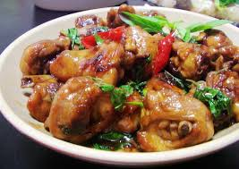

三杯雞
三杯，源自江西，相傳為一江西籍獄卒因獄中條件所限，只使用了甜酒釀、豬油、醬油各一杯燉製雞塊給文天祥食用故而得名。後來演變成為贛菜、
客家菜常見的料理手法，常見於江西、台灣及廣東。
客家式三杯將料理過程中，豬油改為麻油、酒釀改為米酒。醬油、米酒、麻油同樣是每種一杯，故仍然稱為「三杯」。常用三杯料理的食材是雞肉和小捲。
另外，要做出成功的客家式三杯，關鍵的材料還有九層塔、薑和蒜頭。我的經驗三杯雞的家庭做法可以調整‘杯’的量，
不需用到1杯，等比例即可！同樣的醬料也可自由運用在不同的三杯料理。

江振誠
薑母鴨
滷肉飯
心得